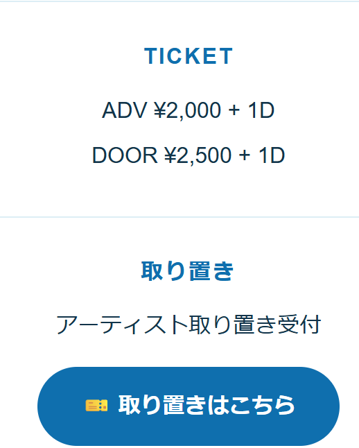
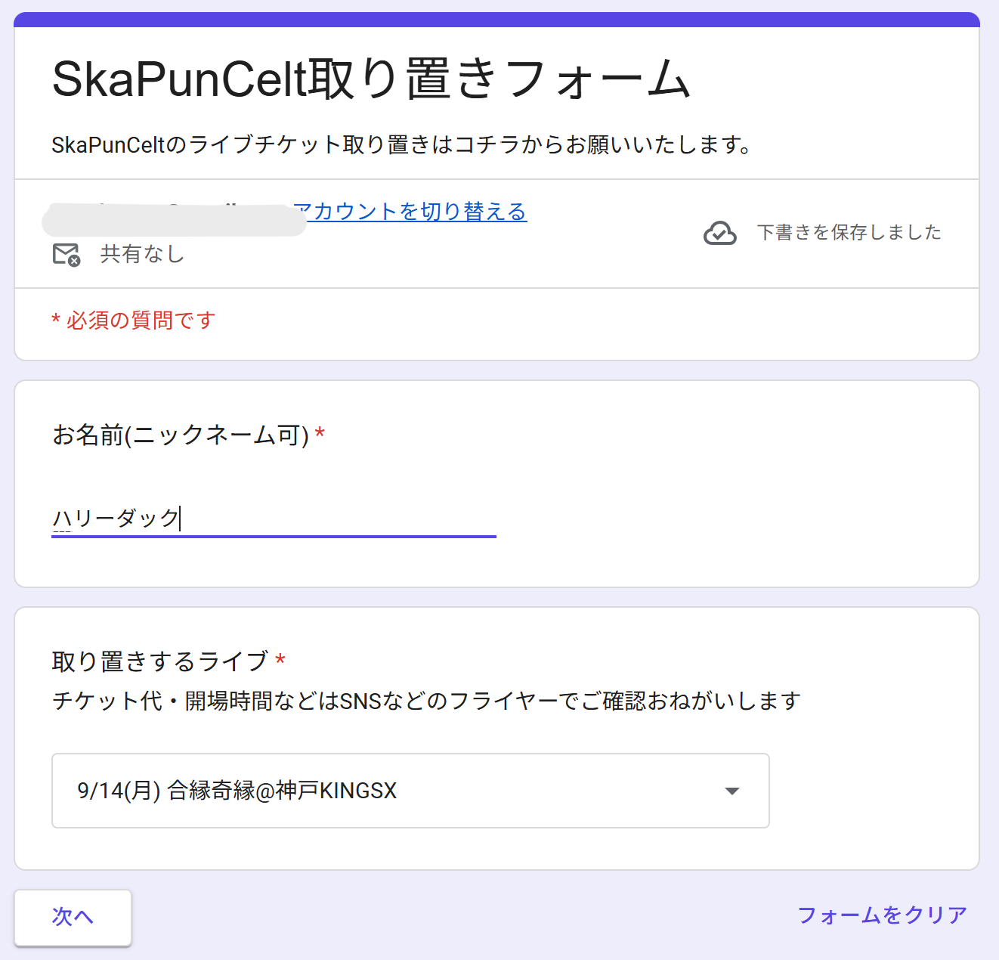
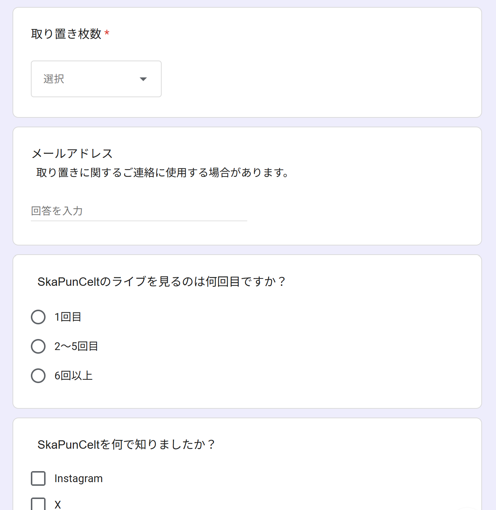
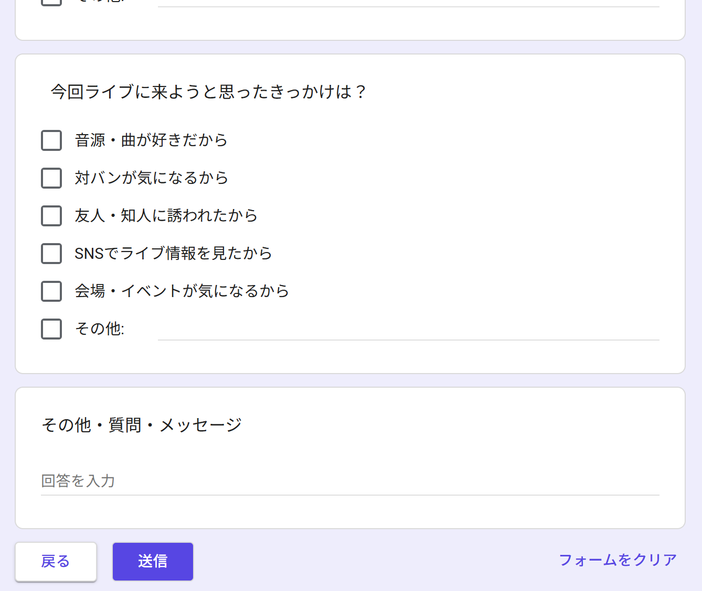

FIRST LIVE
SkaPunCeltの
ライブに行ってみよう！
初めてSkaPunCeltを観る方へ。
ライブに行くまでの流れを
わかりやすく紹介します。
01
まずはライブを探そう
SkaPunCeltのライブに行ってみたい！
と思ったら、まずはLIVEページから
気になるライブを探してみてください。
02
「取り置き」って何？
ライブに行くことが決まったら、
事前に「このライブに行きます！」と
予約することができます。
SkaPunCeltでは、この予約のことを
「取り置き」と呼んでいます。
「取り置き」と聞くと、
チケットを事前に受け取るように
思うかもしれませんが、
取り置きでは、紙や電子チケットなどを
事前に受け取る必要はありません。
SkaPunCeltの取り置きフォームに
必要な情報を入力して送信すればOKです。
取り置きフォームは、
すべてのライブで共通のフォームです。
03
取り置きの流れ
取り置きは、とても簡単です。
実際のフォームに沿って説明します。
① 取り置きフォームを開く
LIVEページなどにある
🎫取り置きはこちら
を押します。

↓
② 1ページ目を入力する
1ページ目では、
「お名前（ニックネーム可）」と
「取り置きするライブ」を入力・選択します。
チケット代・開場時間などは、
各ライブのSNSやフライヤーで
ご確認をお願いします。

↓
③ 「次へ」を押す
1ページ目の入力が終わったら、
「次へ」を押して2ページ目へ進みます。
↓
④ 2ページ目を入力する
2ページ目では、
取り置き枚数を入力します。
簡単なアンケートもありますが、
こちらは任意です。
答えなくても取り置きできます。

↓
⑤ 「送信」を押す
最後に「送信」を押せば、
取り置き完了！

これでライブ当日の準備はOKです。
04
「ADV」って何？
ライブの料金には、
「ADV」と書かれているものがあります。
ADVは、事前に予約した人が利用できる
前売り料金のことです。
取り置きをしておくと、
当日券よりも少し安い
ADV料金で入場できます。
そして、ここも大事。
チケット代を支払うのはライブ当日です。
取り置きの時点で、
チケット代を支払う必要はありません。
05
ライブ当日はどうすればいい？
いよいよライブ当日！
会場に着いたら、まずは受付へ向かいます。
「受付で何て言えばいいんだろう……」
と心配になったら、大丈夫。
これをそのまま読めばOKです。
魔法の合言葉
「SkaPunCeltで取り置きの○○です」
○○には、
取り置きフォームに入力したお名前
を入れてください。
ニックネームで取り置きした場合は、
そのニックネームを伝えればOKです。
あとは受付の案内に従って、
チケット代＋ドリンク代を支払います。
支払いが終わったら、
そのまま会場へ入場できます。
06
会場に入ったらどうする？
受付を済ませたら、いよいよライブハウスの中へ！
初めてだと、 「どこに行けばいいんだろう？」 と思うかもしれません。
基本的には、好きな場所でライブを観ればOKです。
前の方で観ても、後ろの方で観ても大丈夫。
自分が観やすい場所で楽しんでください。
「前に行かなきゃダメ」
「踊らなきゃダメ」
「ライブの楽しみ方を知らないとダメ」
……そんなルールはありません。
初めてなら、まずはライブを観るだけでも十分です。
07
SkaPunCeltのライブを楽しもう！
ここまで来たら、あとはライブを楽しむだけ！
SkaPunCeltのライブでは、
曲を知らなくても大丈夫です。
音楽を聴きながら、
手拍子をしたり、体を動かしたり、
一緒に歌ったり。
自分が楽しいと思う方法で楽しんでください！
SkaPunCeltのライブでは、
みんなで一緒に楽しめる場面もあります。
例えば……
「Can you Skadan?」
と聞こえてきたら、
「Yes, I can!」
と返してみてください！
もちろん、最初は見ているだけでも大丈夫。
ライブに慣れてきたら、
少しずつ一緒に楽しんでみてください。
08
モッシュが苦手な方へ
SkaPunCeltのライブでは、
曲によってモッシュが起こることがあります。
「モッシュって何？」という方へ。
モッシュとは、
ライブ中に観客同士がぶつかったり、
押し合ったりしながら盛り上がる
ライブハウスならではの楽しみ方のひとつです。
激しく動くこともあるので、
小さなお子さんや、モッシュが苦手な方には
危険な場合があります。
でも、
モッシュに参加する必要はまったくありません。
モッシュが苦手な方は、
左右の壁沿いや、一番前の列など、
比較的モッシュに巻き込まれにくい場所で
楽しむことができます。
※会場の構造や当日の状況によって変わるので、
周りの様子やスタッフの案内を確認しながら
安全に楽しんでください。
特にSkaPunCeltでは、
「Deadly Drive」という曲で
モッシュが起こります。
「Deadly Drive」と聞こえてきたら、
「モッシュはちょっと怖い！」という人は
逃げてください。
逃げても大丈夫。
どこにいても、ライブは楽しめます。
前でも、後ろでも、壁際でも。
自分が一番楽しめる場所で観てください！
09
もっとライブを楽しみたい方へ
SkaPunCeltには、
ライブ中のお決まりの掛け声や合図があります。
知っておくと、
もっとライブに参加して楽しめます！
例えば、メンバーが
「おどれ！」
と言ったら、
ツーステやスカダンをしてみてください！
「ツーステってどんな踊り？」
「スカダンってどうやるの？」
という方も大丈夫。
Instagramには、
メンバーが実際に踊っている動画や、
ライブで踊っている人の様子があります。
ぜひ一度チェックしてみてください！
そして、SkaPunCeltには
曲ごとの掛け声もあります。
例えば……
「Ride The Wave!! 🏄♂️」
「Ride The Wave」と聞こえてきたら、
「ウォーオー！」
と一緒に声を出してみてください！
「Skadan!」
「Can you Skadan?」と聞こえてきたら、
「Yes, I can!」
と返してみてください！
「Deadly Drive」
「ヘドバン！ イフユー！」と聞こえてきたら、
「ドンワナダイ！」
と返してみましょう！
最初から全部覚える必要はありません。
周りの人を見ながら、
「これならできそう！」と思ったものから
少しずつ参加してみてください。
観るだけでも楽しい。
一緒に踊っても楽しい。
一緒に歌っても楽しい。
自分なりの楽しみ方で、
SkaPunCeltのライブを楽しんでください！
ここまで読んで……
そろそろライブに
行きたくなっていませんか？
実際のライブで、
SkaPunCeltを一緒に楽しみましょう！
Q&A
よくありそうな質問
特別な決まりはありません。
普段着で大丈夫です！
ライブでは動いたり、汗をかいたりすることもあるので、
動きやすい服装がおすすめです。
ライブハウスでは、入場時に
チケット代とは別にドリンク代が必要になることがあります。
これを「ワンドリンク」と呼びます。
SkaPunCeltのライブでは、
チケット代と一緒に支払うことが多いです。
ドリンク代や支払い方法は、
各ライブの案内も確認してください。
もちろん大丈夫です！
1人でライブを観に来ている人もいます。
自分のペースで楽しんでください。
大丈夫です！
初めて聴く曲でも、
音楽を聴いたり、手拍子をしたり、
自由に楽しんでください。
SkaPunCeltのライブは、
基本的に写真・動画の撮影OKです！
ただし、ライブによっては
運営側のルールで撮影NGの場合があります。
撮影できない場合は、
各種SNSなどで事前にお知らせします。
会場によっては、
ロッカーがない場合もあります。
できるだけ大きな荷物は少なくして、
両手を空けられるような格好にしておくと楽です。
特に踊ったり、ライブを思いっきり楽しみたい人は、
荷物を軽くしておくのがおすすめです！
開場時間は、会場に入れるようになる時間です。
開演時間は、ライブが始まる時間です。
例えば「開場17:30・開演18:00」なら、
17:30から会場に入ることができ、
18:00からライブが始まります。
もちろんです！むしろいっぱい話しかけてください！
ライブの感想を聞けたり、
直接お話しできたりするのは、
メンバーにとっても嬉しいことです。
ただし……
ライブ前はメンバーも緊張していて、
うまく話せないことがあります。
……そのときはごめんなさい
ライブが終わったあとなど、
ぜひ気軽に声をかけてください！
もしくは、緊張をほぐせそうな一発ギャグをお願いします。
まずは好きな場所でライブを観てください。
前でも後ろでも、壁際でも大丈夫。
周りを見ながら、自分が楽しめる場所を探してみてください！
会場のスタッフに聞いてみてください。
メンバーに聞いてくれても大丈夫です。
メンバーもたぶんわからないのでスタッフさんに聞きに行きます！
初めてのライブで分からないことがあっても、
恥ずかしいことではありません。
「初めてなので分からないです！」
と伝えれば大丈夫です。